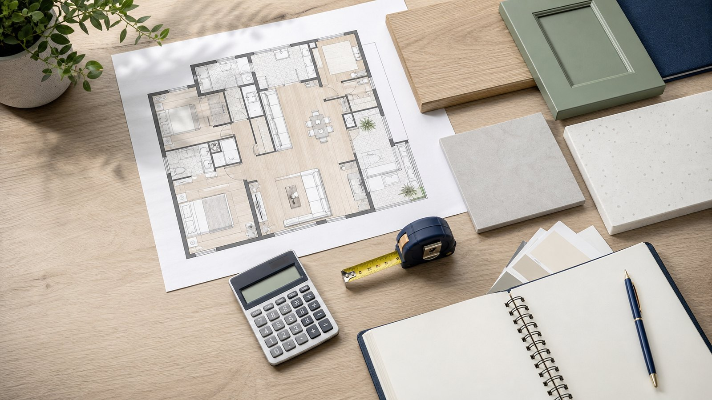

34평 아파트 리모델링, 예산 6천만원으로 어디까지 될까?

전체공사 기준으로 6천만원 예산이 어느 범위까지 커버되는지, 어디서 비용이 크게 갈리는지 실제 항목별로 정리했습니다.
예산의 큰 줄기
34평 전체공사에서 비용의 대부분은 목공·주방·욕실·바닥에서 결정됩니다. 6천만원 예산이면 표준~준프리미엄 자재로 전체를 마감하는 수준이 일반적입니다.
돈이 갈리는 지점
주방 상판(칸스톤·세라믹)과 욕실 타일 등급, 창호 교체 여부, 조명·전기 확장 범위에서 수백만원 단위로 차이가 납니다. 여기서 우선순위를 정하는 것이 핵심입니다.
정확한 금액은 실측 후
표시 금액은 평당 단가 기준의 예상치입니다. 방문 실측으로 현장 상태(철거량·배관·수평)를 확인한 뒤 정식 견적서로 확정됩니다.